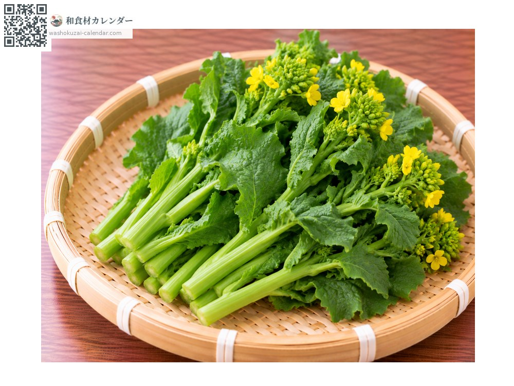
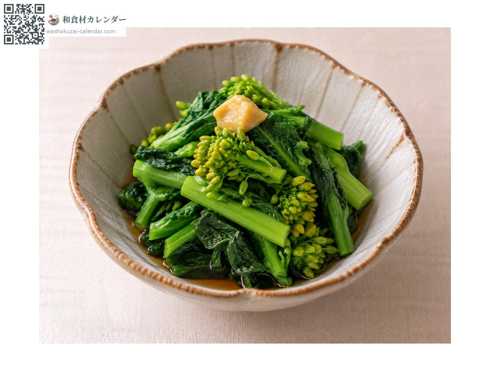
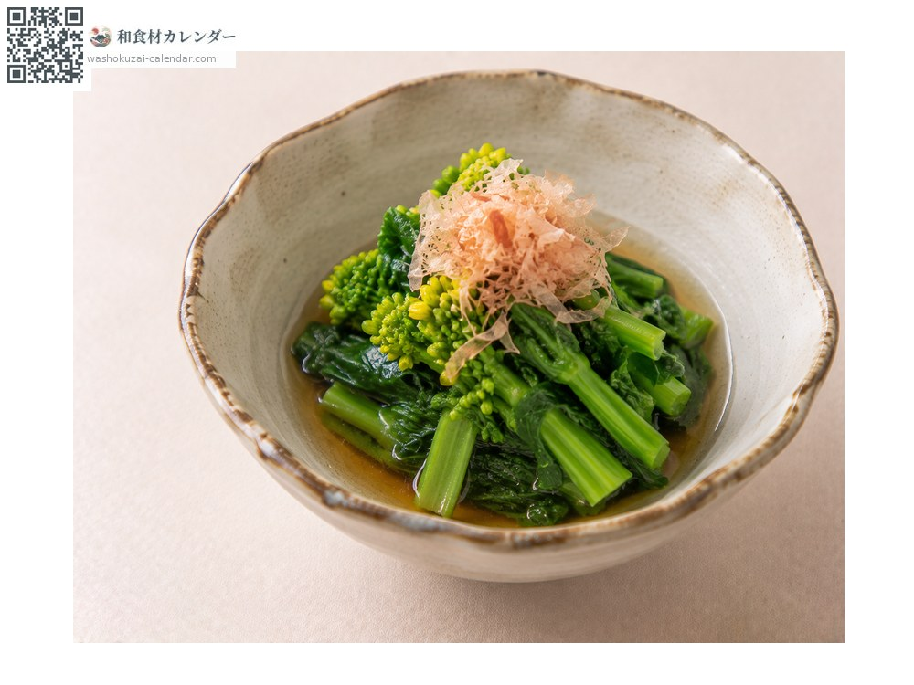
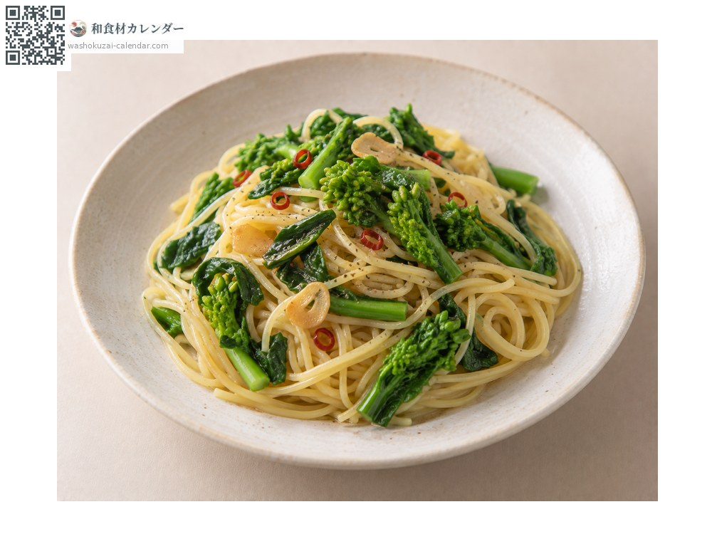
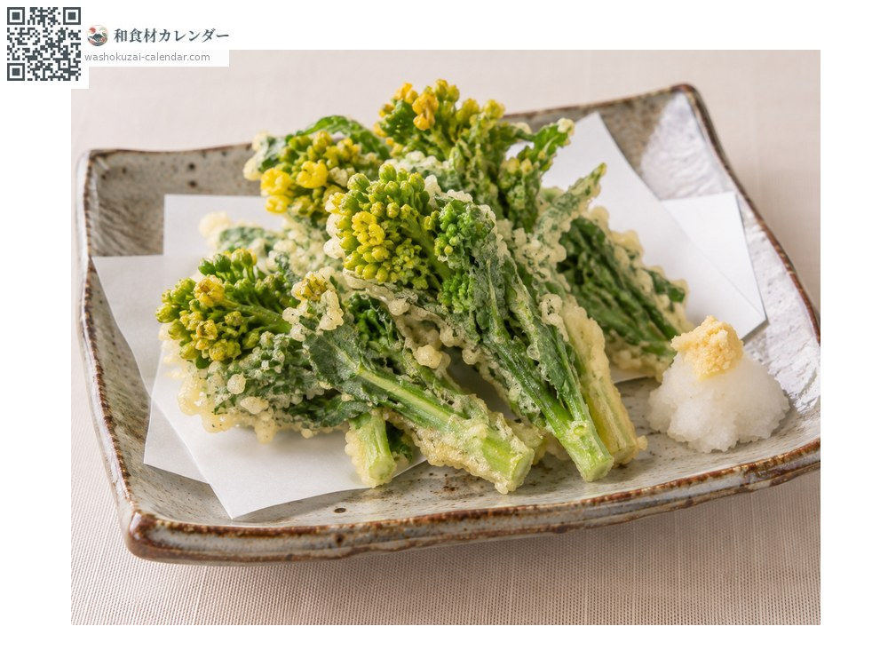

野菜
ナノハナ
なのはな
別名・別表記菜の花、菜花、nanohana
旬は2月・3月

旬の時期
1月
2月
3月
4月
5月
6月
7月
8月
9月
10月
11月
12月
旬出回り
調理法

辛子和え
茹でて辛子醤油で。

おひたし
出汁に浸して。

パスタ
にんにくと炒める。

天ぷら
つぼみごと揚げる。
選び方
つぼみが固く締まって開いていないもの。茎の切り口がみずみずしいもの。
保存方法
花が開くと味が落ちる。濡らした新聞紙に包んで立てて冷蔵、早めに使う。
主な産地
豆知識
ほろ苦さが特徴。花が咲くとえぐみが強くなるため、つぼみのうちに収穫する。